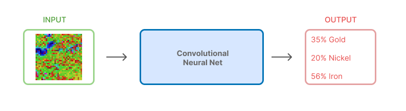
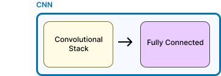
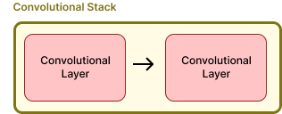
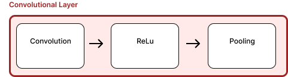
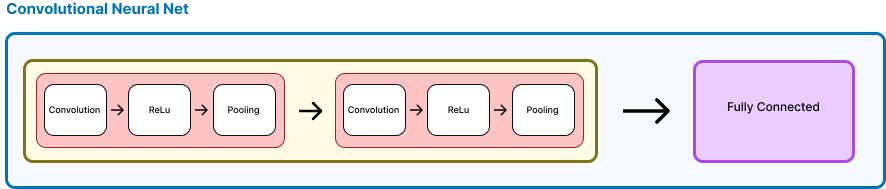
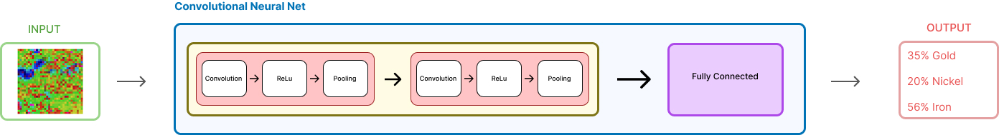

The Illustrated CNN
Original Upload: 2024-09-09
Last Updated:
Introduction
In a previous section, we learned about neural networks. This time, we learn about Convolutional neural networks, the backbone of computer vision
A high level understanding
Input an image, goes through this mysterious box, and outputs a prediction.

Before we unpack what this convolutional component, a very brief understanding in the input
Input
Say we trained a model to classify geophysical images as containing mineralization or not. Now, we want to input an image to this model to know if it contains mineralization or not.
The image dimensions in pixel width and height should be consistent with what size dimensions the model was trained on. In this case, we're using a 32×32 pixel region as input to our model.
Using color could positively affect model results if it helps to add context, in this case it does, but for demonstration purposes we will use black and white. For colored images, we would have 3 channels, RGB, instead of just one. We will get to how that changes things later.
You must be cognizant, the actual input is never colors or images, it's always numbers. This is what the actual input is
#36 x 36 matrix
[[222, 205, 214, ..., 176],
[136, 164, 174, ..., 173],
[111, 107, 105, ..., 199],
# ...
[182, 140, 94, ..., 170]]
Where 0 represents white or an absense of color, and 255 represents black or the presence of color.
Perfect, so the input to the CNN is a matrix of numbers representing the intensity of the each pixel in the image.
Convolution Neural Net
Taking a closer, we see that the CNN is just adding a convolutional component before the fully connected layer - It really is just that simple.

This 'stack' is just two convolutional layers, whose processing is the same. The output of the first is the input of the second.

Each layer is comprised of 3 steps in sequence, let's begin with the convolution

Convolution
The first convolution inputs our matrix, and outputs feature maps It does this by applying a filter, known as a kernel, to the input matrix.
It's literally just the dot product, i.e., piecewise matrix multiplication
Let's take a 4x4 input matrix, and a 2x2 filter, and see how the convolution works.
#4x4 matrix input matrix
[[222, 205, 214, 176],
[136, 164, 174, 173],
[111, 107, 105, 199],
[182, 140, 94, 170]]
#2x2 filter
[[1, 0],
[0, 1]]
#Convolution output
#The top left corner in the input matrix, flattened is [222, 205, 136, 164]
#The filter flattened is [1, 0, 0, 1]
#Input X filter is: 222*1 + 205*0 + 136*0 + 164*1 = 388
#So the top left corner of the feature map is 388
You must see, that this operation is entirely parallelizable. That is to say that the output of each operation is independent of others. In fact, what PyTorch or TensorFlow does is take the flattened input matrix and matrix multiple of the filter, producing the output matrix. Since GPUs assign a single thread to each dot product, this is a very efficient operation.
In practise, the first convolutional layer has 32 filters, lets just look at 3
Please, understand that for visualization purposes we slid the kernel across, in practise, since this is a parallel operation, the entire output matrix is calculated simultaneously.
These 3 filters, which are learned during training, are almost universal. They emerge as a consequence of training in almost every situation, cat recognition, human faces, objects, etc
Perfect, so this is the output of the Convolution, we now use this as input to the Relu
ReLU
Next, we apply the ReLU activation function. It's simple—just replaces any negative value with zero.
This introduces non-linearity, which is crucial because otherwise, the network would just be a linear function and wouldn't be able to model complex patterns.
Pooling
Pooling a way to attentuate the activations in the feature maps
Max pooling, is the most common type of pooling. This method, slides a square over the matrix and keeps only the largest number in each square
This mapping shrinks the matrix size a tiny bit. Let's see how this is done
#4x4 matrix input matrix
input = [[1, 2, 3, 4],
[5, 6, 7, 8],
[9, 10, 11, 12],
[13, 14, 15, 16]]
#If we take a 2x2 window, with a stride of 1, this is the outputs:
#Top left:
max([[1,2],[5,6]]) = 6
#Top middle:
max([[2,3],[6,7]]) = 7
#etc.. this is the output matrix:
output = [[ 6, 7, 8],
[10, 11, 12],
[14, 15, 16]]
and a visualization of this, again, for visualization purposes we slide the window across, in practise, since this is a parallel operation, the entire output matrix is calculated simultaneously.
That concludes the first convolutional layer.
The Second layer
The output from the first layer is now the input to the second.

Since, we now know the steps of convoluting, relu, followed by pooling, we show it all here in one step
observe three notable things.
- The number of filters doubles, producing double the output maps
- A convolved feature map, produces a heirarchy of features, with decreasing level of abstraction
- With successive maxpooling, the output matrices become smaller and smaller.
Fully-connected layer
The output of the convolution is flattened into a column vector, and then passed into the fully connected layer.
Flattening
We now flatten the outputs into a column vector
This vector gets passed into the fully connected layers. This step is crucial as it transforms our 2D feature maps into a 1D format that traditional neural network layers can process.
Connecting
In the fully connected layer, each input node is connected to every node in the next layer. This is where the real "decision-making" happens. All connections between layers are processed in parallel for efficiency.
Output
The output neurons correspond to minerals, and the score associated with each is interpreted as the probability of a mineral occurance
Putting It All Together
We had a model that was trained to classify geophysical images as containing mineralization or not. It went through a convolutional component with successive feature mappings that took what were edges and lines, and used higher order features, the combination of earlier features, to generate new features maps. Finally, this was converted to a column vector and fed to a neural net for prediction

Perhaps what was before an unknown box, has been made more clear